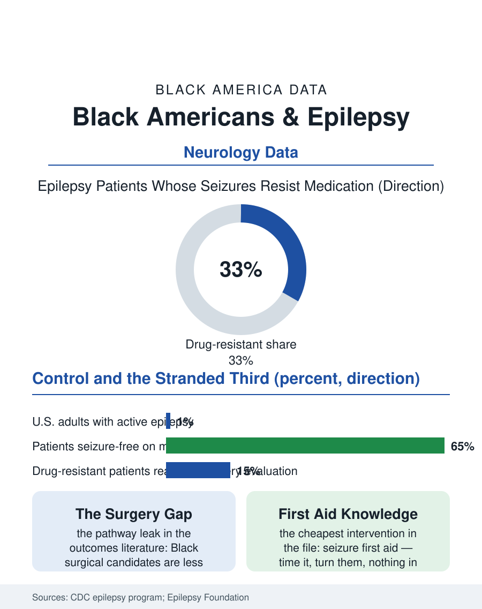

Black Public Health
The Stranded Third: Black Americans and Epilepsy
Epilepsy is common and usually controllable, but the specialty pathway, monitoring units and surgery, reaches Black patients late and least. The epilepsy file.

Epilepsy affects roughly three million American adults, and its burden, like so much in this atlas, is unevenly counted: prevalence studies find Black Americans living with epilepsy at rates at or above the national figure, while the treatment file, the specialists, the surgeries, the seizure-free outcomes, runs measurably behind. The condition is ancient, treatable in the majority of cases with medication, and wrapped in a stigma file as old as the condition itself. This article reads the epilepsy file.
Prevalence and the Diagnostic Shadow
The Centers for Disease Control and Prevention's behavioral surveys estimate active epilepsy in roughly one percent of adults, with state-level studies finding higher burdens in the South's Black Belt and in low-income populations generally, tracking the condition's risk factors: stroke, head injury, and the perinatal and infectious causes that distribute along the same maps as everything else in these pages. Diagnosis is where the shadow falls. Epilepsy is diagnosed clinically, from witnessed events and EEG, and the events are witnessed unevenly: the seizure in a school hallway, a workplace, a traffic stop, enters the medical record through bystanders whose interpretations the data cannot standardize. The misdiagnosis file runs in both directions: nonepileptic events, including psychogenic seizures that trauma histories help produce, misread as epilepsy, and true epilepsy misread as behavioral disturbance, fainting, or intoxication, with the clinical studies finding the misreadings falling disproportionately on Black patients at several points in the pathway. Access to the diagnostic summit, the epilepsy monitoring unit where events are captured on video and EEG together, concentrates in academic centers, and the referral data show Black patients reaching those units later and less often relative to their prevalence.
The Specialist Desert and the Surgery Gap
Treatment sorts patients into a lucky majority and a stranded third. Roughly two-thirds of patients achieve seizure control on medication, and for them epilepsy care is a prescription and a follow-up, accessible wherever primary care functions. The remaining third, drug-resistant epilepsy, need the specialty system: epileptologists, advanced imaging, neuropsychology, and, for the right candidates, surgery that can end seizures entirely. The outcomes literature on that third is one of the health file's starkest: surgical evaluation is underused overall and dramatically underused by Black patients, with studies finding Black surgical candidates less likely to be referred, evaluated, and operated on at every step of a pathway that ends in one of medicine's most effective operations. The medication layer carries its own equity details: antiseizure drug costs, prior authorization friction, and the monitoring bloodwork all tax adherence in the pattern the pharmacy file describes, and breakthrough seizures carry consequences calibrated by the patient's life, the driver's license suspended, the job with machinery lost, the custody question raised, so that a single seizure's social cost falls hardest on the households with the least slack. Neurologist density completes the map: the specialty's workforce, like dermatology's, counts Black physicians in the low single digits, and its clinics cluster in the academic metros, leaving the Black Belt counties where prevalence runs highest to visiting clinics and telehealth.
Stigma, Safety, and the Modern File
The stigma file is not decoration on this condition; it is a clinical variable. Surveys of epilepsy knowledge and attitudes find persistent misconceptions in every community, and in Black communities the condition additionally travels through faith frameworks, where seizures may be interpreted spiritually by families even as they pursue medicine, a dual reading the culturally competent clinics in the record treat as a resource rather than an obstacle, engaging the church support that the community's institutions reliably provide. Safety planning, seizure first aid taught to families, coworkers, and teachers, is the cheapest intervention in the entire file and the least evenly distributed: the knowledge that a seizure is timed, that the person is turned on their side, that nothing goes in the mouth, remains unevenly spread precisely where prevalence is highest. Driving law writes the policy tension in fifty state versions: mandatory reporting versus physician discretion, suspension lengths, and commercial license bars, each rule redistributing the condition's economic cost. The epilepsy file closes on the surgical gap, because it is the file's sharpest moral arithmetic. A condition carried by Black patients at full measure has a definitive treatment for its hardest form, and the pathway to that treatment leaks at every referral joint. The leaks are not mysteries awaiting discovery; they are the same referral, distance, and workforce variables this atlas measures on every page, here attached to a cure. That makes the epilepsy file, like the autism file, a test of whether naming a pathway is worth anything, and the monitoring units' own registries will keep score.
More in Black Public Health
Hypertension Among Black Adults: Prevalence, Control, and Consequences
About 55 percent of Black adults have hypertension — the highest rate of any U.S. group. Prevalence, onset, control, and the stroke, heart, and kidney consequences in the data.
Diabetes Among Black Adults: Prevalence and Complications
Nearly one in five Black adults has diabetes, diagnosed or undiagnosed — and its complications fall with particular weight. The CDC data on prevalence, control, and outcomes.
Black Life Expectancy: The Gap at Birth and Its Causes
Black life expectancy at birth is about 73 years, roughly five years below the national figure — the summary measure of every health gap in this section. The CDC data.
Source: Centers for Disease Control and Prevention epilepsy surveillance; Epilepsy Foundation reports; neurology outcomes literature on surgical referral disparities.